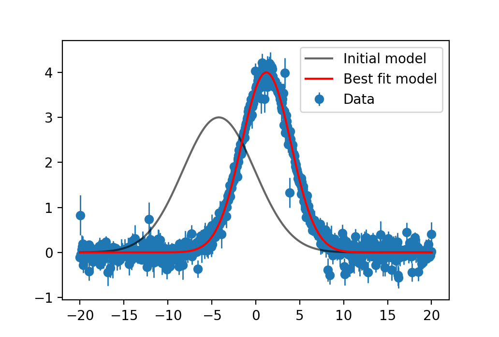

IterativeNelderMead.jl
Documentation for IterativeNelderMead.jl
Installation
using Pkg
Pkg.add("IterativeNelderMead")Details
This flavor of Nelder-Mead is based on the publicly available Matlab algorithm provided here with additional tweaks. It is an excellent choice for objectives where the gradient is costly or not possible to compute. Parameters may be bounded, but any other constraints must be manually implemented through the objective function. The eventual goal for IterativeNelderMead.jl is for support through the SciML Optimization.jl or Optim.jl interface.
Examples
Example: Fitting a Gaussian Curve
# Imports
using IterativeNelderMead
using PyPlot
# Build a Gaussian function
function gauss(x, a, μ, σ)
return @. a * exp(-0.5 * ((x - μ) / σ)^2)
end
# Create a noisy dataset
x = [-20:0.05:20;]
ptrue = [4.0, 1.2, 2.8] # Amp, mean, stddev
ytrue = gauss(x, ptrue...)
yerr = abs.(0.1 .+ 0.1 .* randn(size(ytrue)))
ytrue .+= yerr .* randn(size(ytrue))
# Chi2 loss function
redchi2loss(residuals, yerr, ν) = sum((residuals ./ yerr).^2) / ν
loss(pars) = redchi2loss(ytrue .- gauss(x, pars...), yerr, length(ytrue) .- length(pars))
# Initial parameters and model
p0 = [3.0, -4.2, -4.1] # Amp, mean, stddev
lower_bounds = [0, -Inf, 0]
upper_bounds = [Inf, Inf, Inf]
y0 = gauss(x, p0...)
# Optimize
result = optimize(loss, p0, IterativeNelderMeadOptimizer())
# Best fit model
ybest = gauss(x, result.pbest...)
# Plot
begin
errorbar(x, ytrue, yerr=yerr, marker="o", lw=0, elinewidth=1, label="Data", zorder=0)
plot(x, y0, c="black", label="Initial model", alpha=0.6)
plot(x, ybest, c="red", label="Best fit model")
legend()
plt.show()
endThe resulting plot is shown below.

API
IterativeNelderMead.IterativeNelderMeadOptimizer — TypeIterativeNelderMeadOptimizer(;options=nothing)Construct an IterativeNelderMeadOptimizer optimizer. options is of type Dict{String, Any}. Default options are:
max_fcalls = 1400 * # of varied parameters. The number of objective calls is not reset after each iteration / subspace.no_improve_break = 3. For a given parameter space, the number of times the solver needs to converge in a row to officially be considered converged. This applies to all parameter spaces / iterations.ftol_rel = 1E-6. For a given parameter space, the relative change in the objective function to be considered converged. This applies to all parameter spaces / iterations.penalty = 10. The penalty applied when parameters are out of bounds. The penalty is applied asf_new = f + penalty * abs(bound - x)in normalized parameter units if both bounds are provided (and therefore bound = 0 or 1), or the original units if only one bound is provided.n_iterations = number of varied parameters. One iteration corresponds to a fit for the entire space followed by fits to each 2-subspace.
IterativeNelderMead.optimize — Functionoptimize(obj, p0::Vector{Float64}, optimizer::IterativeNelderMeadOptimizer; lower_bounds=nothing, upper_bounds=nothing, vary=nothing)Minimize the object function obj with initial parameters p0 using the IterativeNelderMeadOptimizer solver. Bounds can also be provided as additional Vectors. The vary keyword accepts an optional BitVector if certain parameters should remain fixed. Returns an NamedTuple with properties:
pbest::Vector{Float64}: The final parameters corresponding to the optimized objective value fbest.fbest::Float64: The final optimized objective value.fcalls::Int: The number of total objective calls.simplex::Matrix{Float64}: The final simplex.- iteration::Int`: The number of iterations performed.